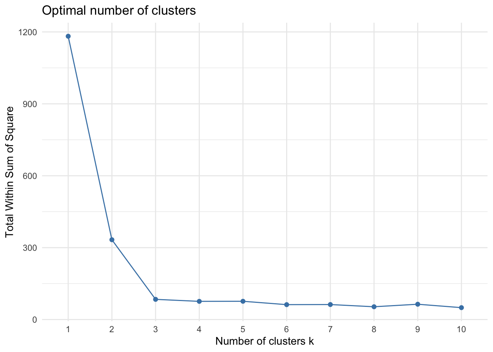
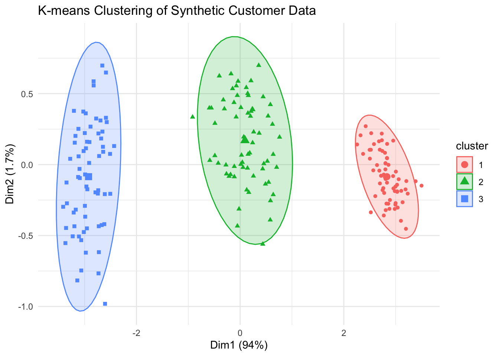

# Set seed for reproducibility
set.seed(123)
# Number of "customers"
n <- 198
# Generate synthetic customer data with clear clustering patterns
CustomerID <- 1:n
Age <- c(
round(rnorm(n / 3, mean = 25, sd = 3)), # Younger group
round(rnorm(n / 3, mean = 40, sd = 3)), # Middle-aged group
round(rnorm(n / 3, mean = 55, sd = 3)) # Older group
)
Annual_Income <- c(
round(rnorm(n / 3, mean = 30000, sd = 2000)), # Lower-income group
round(rnorm(n / 3, mean = 75000, sd = 5000)), # Middle-income group
round(rnorm(n / 3, mean = 120000, sd = 10000)) # Higher-income group
)
Credit_Score <- c(
round(runif(n / 3, min = 300, max = 550)), # Poor credit score group
round(runif(n / 3, min = 600, max = 750)), # Fair credit score group
round(runif(n / 3, min = 800, max = 850)) # Excellent credit score group
)
Online_Purchases <- c(
round(runif(n / 3, min = 15, max = 20)), # High engagement group
round(runif(n / 3, min = 5, max = 15)), # Medium engagement group
round(runif(n / 3, min = 0, max = 5)) # Low engagement group
)
Store_Visits <- c(
round(runif(n / 3, min = 1, max = 3)), # Low frequency group
round(runif(n / 3, min = 4, max = 7)), # Medium frequency group
round(runif(n / 3, min = 8, max = 10)) # High frequency group
)
Spending_Score <- c(
round(rnorm(n / 3, mean = 30, sd = 5)), # Low spending group
round(rnorm(n / 3, mean = 50, sd = 5)), # Medium spending group
round(rnorm(n / 3, mean = 70, sd = 5)) # High spending group
)
# Combine variables into a data frame
business_data <- data.frame(
CustomerID,
Age,
Annual_Income,
Credit_Score,
Online_Purchases,
Store_Visits,
Spending_Score
)
# Quick exploration of the generated data
# head(business_data) # Preview the first few rows
# summary(business_data) # Summary statistics for a deeper understandingMGMT 17300: Data Mining Lab
Unsupervised Learning: Clustering
Overview
- Clustering
- Clustering Methods
- Preparing Data for Clustering
- Number of Clusters
- K-means Clustering
Clustering
What is Clustering?
Clustering is an unsupervised learning technique for finding patterns or groupings in data, without relying on predefined labels.
Common Business Applications:
- Customer Segmentation: Identify groups of customers with similar buying behaviors or demographics.
- Market Segmentation: Find potential submarkets for targeted marketing campaigns.
- Anomaly Detection: Detect unusual transactions or outliers in finance.
Key Idea: We measure similarity (or distance) among data points and group the “closest” points together.
Clustering Methods
Main Clustering Methods
Choosing a Method: The best clustering technique depends on the nature of the data, the goals of analysis, and computational constraints.
| Method | Characteristics | Strengths | Weaknesses |
|---|---|---|---|
| K-means | Divides data into non-overlapping groups based on minimizing within-cluster variance. | Simple and efficient for large datasets. | Sensitive to outliers and requires predefining the number of clusters (k). |
| Hierarchical | Builds a tree-like structure (dendrogram) to group data hierarchically. | Does not require predefining the number of clusters; visualizes relationships. | Computationally expensive for large datasets; less scalable. |
| DBSCAN | Groups data based on density of points in a region. | Can find arbitrarily shaped clusters and detect outliers. | Struggles with varying densities and high-dimensional data. |
| Spectral | Uses graph theory to partition data based on eigenvalues of similarity matrices. | Effective for complex cluster structures and non-linear separations. | Computationally intensive; requires tuning parameters like similarity metric. |
| Gaussian Mixture | Fits data to a probabilistic model, assuming data is generated from Gaussian distributions. | Handles overlapping clusters and provides probabilities of cluster membership. | Sensitive to initialization and assumes Gaussian distribution. |
Generating a Business-Focused Synthetic Dataset
Generating a Business-Focused Synthetic Dataset
This dataset simulates the type of information businesses collect to better understand and segment their customer base. Clustering these data points can reveal groups with similar characteristics, enabling targeted strategies:
- Demographics: Age of the customer.
- Financials: Annual income and credit score.
- Behavioral Metrics: Online purchases, store visits, and a calculated spending score.
Preparing Data for Clustering
Scaling Data for Clustering
Why Scaling Matters: Clustering methods like K-means rely on distance calculations (e.g., Euclidean distance) to group data points. Variables with larger scales (like income) can disproportionately influence the results, overshadowing variables with smaller ranges (like the number of store visits).
Scaling Process: Standardizing the data ensures that all variables contribute equally to the distance calculations. After scaling, each variable will have: Mean = 0 and Standard Deviation = 1.
Key Outcome: Scaling ensures that no single variable dominates due to its range, enabling fair and accurate clustering. By scaling, we prepare the dataset for clustering while preserving the relationships and patterns inherent in the original data.
# Select relevant columns for clustering (excluding the CustomerID)
business_features <- business_data[, -1]
# Scale data so that each feature contributes more equally
business_scaled <- scale(business_features)
# Check scaled data
# head(business_scaled) # Preview the scaled data to verify changesNumber of Clusters
Methods to Determine the Number of Clusters
| Method | How it Works | When to Use |
|---|---|---|
| Elbow Method | Plots the within-cluster sum of squares (WSS) against the number of clusters (k). The “elbow” point suggests the optimal k. | Suitable for datasets with compact, well-separated clusters. Provides a visual heuristic but can be subjective. |
| Silhouette Method | Measures how similar an object is to its own cluster compared to other clusters. The average silhouette score indicates clustering quality. | Ideal when seeking well-defined clusters with clear separation. Helps assess cluster validity without relying on visual interpretation. |
| Gap Statistic | Compares total within-cluster variation for different k values against random data. The k with the largest gap indicates the optimal number of clusters. | Effective for complex datasets with no obvious structure. Computationally intensive but provides robust results. |
| Hierarchical Clustering (Dendrograms) | Uses a dendrogram to visualize data merging at different levels. Cut the dendrogram at the height corresponding to the desired number of clusters. | Useful for smaller datasets or when visualizing relationships between clusters is important. Less effective for large datasets due to computational overhead. |
| Bayesian Information Criterion (BIC) | Evaluates models based on statistical criteria, balancing model fit and complexity. Lower BIC scores suggest better models with appropriate cluster numbers. | Effective for probabilistic clustering methods like Gaussian Mixture Models. Requires knowledge of model assumptions. |
Here’s the updated slide with an added explanation about how the Elbow Method works:
Number of Clusters: Elbow Method
How the Elbow Method Works:
- The Elbow Method involves plotting the within-cluster sum of squares (WSS) against the number of clusters (k).
- WSS measures the total variance within clusters, and as the number of clusters increases, WSS decreases.
- The “elbow point” is where the rate of decrease in WSS slows down significantly. This point suggests the optimal number of clusters (k) as it balances cluster compactness and simplicity.

Interpretation: we might choose k = 3 based on the Elbow Method, as the WSS shows a noticeable change in slope at this point.
K-means Clustering
K-means Clustering
Simulation!
https://www.naftaliharris.com/blog/visualizing-k-means-clustering/
K-means Clustering
The K-means algorithm begins by randomly assigning initial centroids within the data space.
nstart = 25means 25 different random initial centroid sets are tested, helping achieve a more stable solution.
Each data point is then assigned to the nearest centroid, forming preliminary clusters.
The centroids are updated by recalculating the mean position of all points within each cluster.
These steps—assignment and centroid update—repeat iteratively until convergence, where cluster memberships no longer change and the centroids stabilize.
km_res$clusterreturns the cluster assignment for each observation.
# Set seed for reproducibility
set.seed(123)
# Let's pick k=3 based on the elbow plot
km_res <- kmeans(business_scaled, centers = 3, nstart = 25)
# Examine the results
# km_res
# head(km_res$cluster)Visualizing K-means Clusters

- The plot maps high-dimensional data into 2D using PCA (Principal Component Analysis) to make it easier to interpret.
- Each cluster formed in the original high-dimensional space is projected into 2D and represented by a unique color and surrounded by an ellipse showing the confidence region.
- Centroids (cluster centers) are marked to summarize each group.
Interpreting Clusters for Business
# Add cluster info to the original data
business_data$Cluster <- km_res$cluster
# Calculate average values per cluster
cluster_eda <- aggregate(. ~ Cluster, data = business_data[, -1], FUN = mean)
# cluster_edaInsights:
| Feature | Cluster 1 | Cluster 2 | Cluster 3 |
|---|---|---|---|
| Age | Older (~54.86) | Middle-aged (~40.05) | Youngest (~25.08) |
| Annual Income | Highest (~$119,371) | Moderate (~$76,047.36) | Lowest (~$29,954.50) |
| Credit Score | Excellent (~824.67) | Moderate (~676.21) | Lowest (~418.36) |
| Online Purchases | Lowest (~2.45) | Moderate (~9.94) | Highest (~17.38) |
| Store Visits | Highest (~8.88 visits) | Moderate (~5.51 visits) | Lowest (~1.97 visits) |
| Spending Score | High (~70.56) | Moderate (~49.97) | Low (~30.76) |
Business Potential Implications:
- Cluster 1: Target high-income customers with store-centric promotions.
- Cluster 2: Leverage moderate online and in-store engagement for balanced campaigns.
- Cluster 3: Focus on e-commerce strategies to engage younger, lower-income customers.
Summary
Summary
Main Takeaways from this lecture:
Clustering is an unsupervised learning method that groups data based on similarity, without pre-existing labels.
K-means is a widely used technique that requires:
- Choosing the number of clusters (k), often guided by the Elbow Method or other metrics.
- Scaling data so no variable dominates due to differing scales.
A business-focused synthetic dataset (Age, Income, Credit Score, etc.) demonstrates how clustering reveals customer segments with distinct demographic, financial, and behavioral traits.
Cluster interpretation involves examining average features per cluster and translating these differences into actionable insights (e.g., targeted marketing, store vs. online promotions).
Other clustering methods (Hierarchical, DBSCAN, Spectral, Gaussian Mixtures) may offer advantages for different data structures or domain needs.